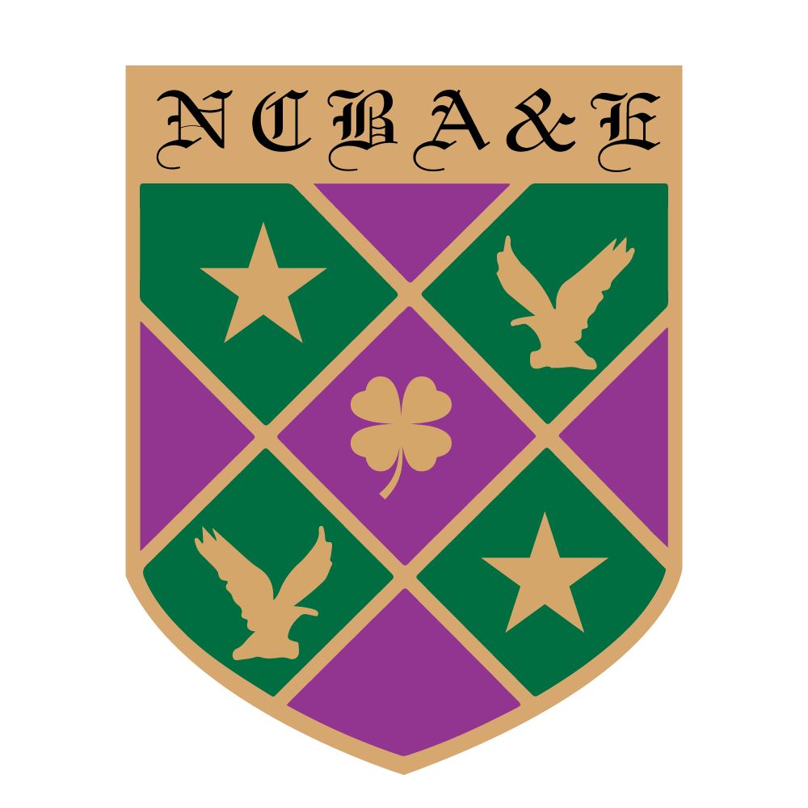

Select a profile above to get started
I design, build, and ship production AI systems end to end. My work spans RAG pipelines and LLM orchestration, agentic workflow automation, computer vision at clinical scale, MLOps infrastructure across GCP, Azure and AWS, and real-time data engineering. I have delivered measurable results in production environments: a 70% reduction in document retrieval time, 35% analyst workload reduction, 3x pipeline throughput, and sub-100ms inference latency at enterprise scale.
Beyond the engineering, I hold a PhD in Data Science and have published 45+ peer-reviewed papers, giving me the research depth to solve problems that go beyond off-the-shelf solutions. I write about applied ML at BuffML.
I am a versatile Computer Vision, Machine Learning and Data Science Engineer with expertise across AI, deep learning, LLM systems, visual analytics, signal processing, and production deployment. My work spans model research, data engineering, cloud MLOps, real-time inference, and applied systems that turn complex data into usable decision support.
I hold a PhD in Data Science with Distinction from Chulalongkorn University, an MSc and BSc in Electrical Engineering, and an MBA. I am a licensed P.Eng. with Engineers Geoscientists Manitoba (APEGM), am named in the Stanford University/Elsevier World's Top 2% Scientists list, serve as Area Chair for IJCNN 2025 and ICASSP 2026, and bring the research depth of 45+ peer-reviewed papers together with practical engineering delivery.

Google Scholar · ORCID 0000-0002-1131-2398 · Scopus 58759292300 · WoS IAN-4246-2023
I am a licensed Professional Engineer (P.Eng., Engineers Geoscientists Manitoba, APEGM) with a BSc and MSc in Electrical Engineering and a PhD in power systems analysis and intelligent data acquisition. My engineering background spans electrical system design, protection coordination, SCADA/PLC integration, power system simulation, and automated monitoring system deployment. I combine rigorous traditional electrical engineering with modern data-driven intelligence to create systems that are reliable, compliant, and maintainable.
My MSc thesis focused on economic power dispatch optimisation using evolutionary algorithms across multi-machine power systems. I am well-versed in Canadian electrical codes and standards including CSA C22.1, NECB 2020, NFPA 70E, IEC 60255, IEC 61850, and IEEE C37 series, and hold the EGBC 21st Century Energy Transition certificate.
Swipe through applied AI, computer vision, LLM, GeoAI, industrial inspection and product work. Each slide is built from real result assets or live product screens, with the practical outcome called out directly.
Domain-adapted nnU-Net pipeline for high-resolution drone/satellite orthomosaics: a learned input bridge maps 3-channel RGB into the pretrained model's 8-channel Sentinel-2 feature space, with multi-scale patch inference producing boundary masks, overlays and GeoJSON polygon vectors across five zero-shot scenes.


Multi-route segmentation system for site plans: color-plan parsing, line-art analysis, real CAD-plan footprint extraction and aerial parking detection, with automatic pipeline routing and interactive GIS exploration.


YOLO-based agricultural safety demo that detects people, tractors and animals, with dashboard inference, ROS2 interfaces, Docker packaging and embedded deployment notes.


Enhanced YOLOv8x (attention, residual dense blocks, ASPP multi-scale context) for detecting densely packed, visually repetitive wheat heads on the Global Wheat Head Detection dataset, across varying growth stages and lighting.

EfficientNet-B4 classifier (CBAM + residual dense blocks + ASPP) for wheat Fusarium Head Blight, with a calibrated decision threshold and an OpenAI API layer that turns raw model output into a plain-language, decision-support report for non-specialist farmers.
Blind-video tracking pipeline with persistent IDs, confidence overlays, track traces, latency logging, dropped-frame accounting and exportable session reports; the same detector generalizes to a second, clearer catfish benchmark with 20+ simultaneous individuals.


Underwater detection and calibrated biomass prototype using YOLO11 localization, geometric length/thickness measurement, an allometric mass model, and explicit uncertainty reporting instead of overconfident point estimates.


Offline computer-vision inspection for cable defects and wire harnesses, including contour measurement, candidate defect marking, segmentation overlays and CSV reports.

Production AI CRM for service businesses, combining an omnichannel inbox, voice agent, scheduling, follow-up automation and pipeline operations.


Physics-inspired diffusion-state-contextual hybrid network (DSCH-Net) for haze removal on satellite imagery, benchmarked against six published baselines with per-pixel error and CIELAB color-difference maps.


A line of five super-resolution networks (edge-guided video SR, hybrid-attention multiscale SR, saliency-aware SR, surgical-instrument-aware SR, and attention-based pathology SR), each benchmarked against 10+ published baselines on stereo and endoscopic imagery, plus general stereo photography.


Hybrid LLM classifier hardened with adversarial (FGSM) training and multi-task learning to detect machine-generated text under paraphrase and perturbation, validated on tens of thousands of held-out samples per fold.


EfficientNetV2 and Vision Transformer pipeline for multi-class visual pattern recognition with training curves, confusion-matrix validation, Grad-CAM interpretability across all classes, and deployment-oriented model design.


Dual-element MIMO antenna design using a neutralization-line strategy to improve isolation across upper-K and lower-Ka operating bands, validated with measured S-parameters and E-/H-plane radiation patterns.


Scribble-supervised GAN (SGGAB-GAN) for left-ventricle, myocardium and right-ventricle segmentation from cardiac MRI, using superpixel-guided graph-attention boundary refinement to close most of the gap to full pixel-level supervision at a fraction of the labeling cost.


Few-shot episodic prototypical network learning a shared spectral-spatial embedding over 149-band hyperspectral document scans, tackling writer identification, writer verification, ink-mismatch detection, forgery detection, gender and age prediction in one model.


Cross-attention patch fusion GAN that synthesizes class-conditioned histopathology tissue patches from only a handful of expert-labeled references, augmenting rare-pattern training data without replacing expert labels.
Dr. Mansoor Hayat · MBA | PhD | Professional Engineer (P.Eng.) · Winnipeg, MB, Canada · Mansoor.Hayat@umanitoba.ca · +1-204-390-5379